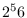

Base64 is an encoding scheme to represent binary data using only
printable graphic characters. The scheme is applied to
uuencode/uudecode. The following functions are defined in
lib/llib/base64.l.
base64encode binstr [function]
-
-
A binary string, binstr is converted to an ASCII string
consisting only of

letters
according to the base-64 encoding rule.
The resulted string is 33% longer than the original.
A newline is inserted every 76 characters.
One or two '=' characters are padded at the end to adjust the
length of the result to be a multiple of four.
base64decode ascstr [function]
-
-
An ASCII string, ascstr, is converted to a binary string
according to the base-64 encodeing.
Error is reported if ascstr includes an invalid character.
2016-03-23